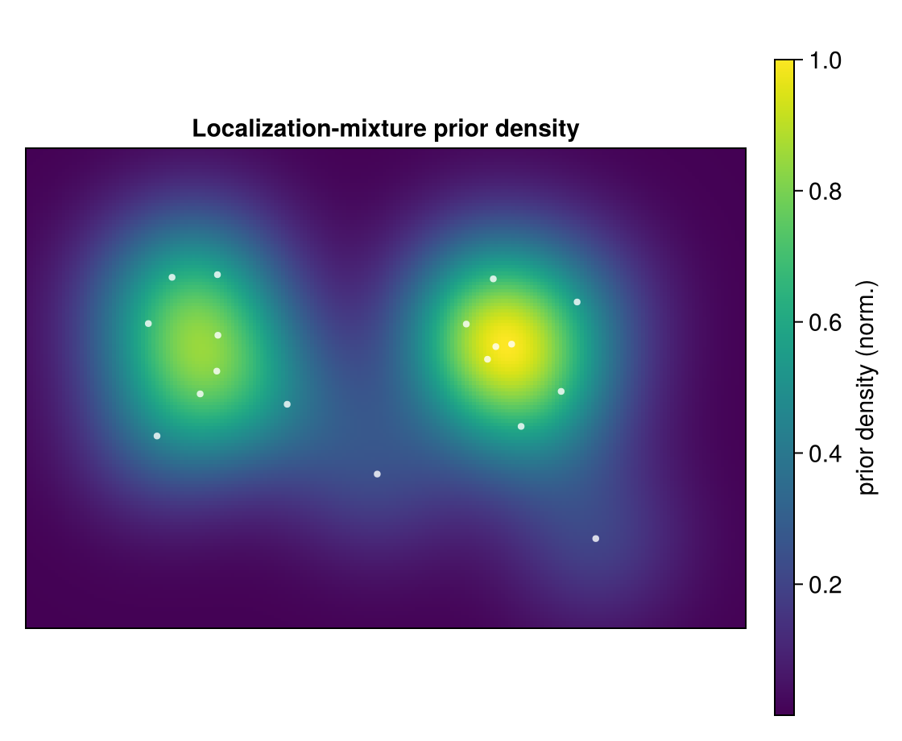
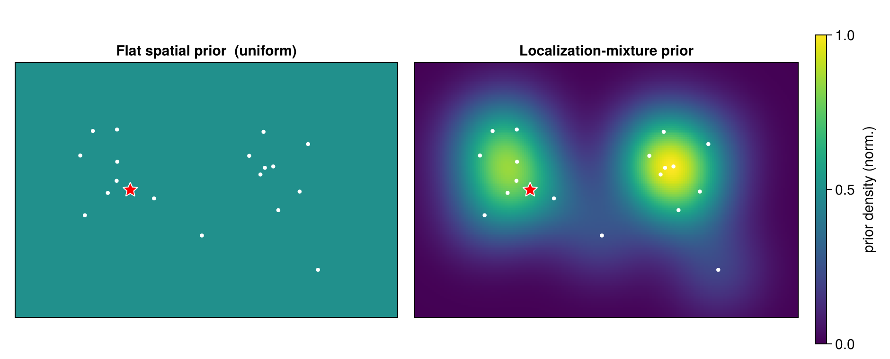

Spatial Models & Marginal Likelihood
Integrating the emitter position $\boldsymbol{\theta}$ out of a cluster gives its marginal likelihood — the score each MCMC move evaluates. The two spatial models (spatial_model = :flat or :locmix) share the Gaussian core and differ only in the position-prior term.
The Gaussian core
With $\mathbf{x}_i \mid \boldsymbol{\theta} \sim \mathcal{N}(\boldsymbol{\theta}, \Sigma_i)$ and a flat (improper) prior on $\boldsymbol{\theta}$, the exact Gaussian marginal is (cluster_stats.jl, log_ml_flat):
\[\log p_{\text{flat}}(\mathbf{x}_{1:n}) = (1-n)\tfrac{D}{2}\log(2\pi) - \tfrac12 \sum_i \log\det\Sigma_i - \tfrac12\big(\mathrm{quad} - \boldsymbol{\eta}^\top \Lambda^{-1}\boldsymbol{\eta}\big) - \tfrac12 \log\det\Lambda .\]
Every term is built from the sufficient statistics of the collapsed representation. The quadratic $\mathrm{quad} - \boldsymbol{\eta}^\top\Lambda^{-1}\boldsymbol{\eta}$ measures how tightly the cluster's localizations agree once their common position is fitted out: a spatially compact cluster scores high, a diffuse one low.
This "Gaussian core" uses an improper, flat prior on $\boldsymbol{\theta}$ — it is not yet a normalized model. The two spatial models below make it proper, each by adding one position-prior term; do not confuse this improper core with the :flat spatial model, which is the uniform-over-area prior of the next section.
Flat (uniform) spatial prior
The flat model places emitters uniformly over the region of area $A$, adding a single Occam factor $-\log A$ per cluster (cluster_stats.jl, log_marginal_likelihood):
\[\log p(\mathbf{x}_{1:n} \mid c) = \log p_{\text{flat}}(\mathbf{x}_{1:n}) - \log A .\]
This $-\log A$ is what penalizes adding emitters under the flat model — each new cluster pays one factor of the area.
Localization-mixture prior (:locmix, the default)
The default model replaces the uniform prior with a localization-mixture prior that concentrates emitter-position mass where localizations are dense:
\[P(\boldsymbol{\theta}) = \frac{1}{N}\sum_{j=1}^{N} \mathcal{N}(\boldsymbol{\theta};\ \mathbf{x}_j,\ \Sigma_j).\]
The marginal then adds $\log P_{\text{locmix}}$ in place of $-\log A$. The sampler evaluates this term as a plug-in: it takes $\log P_{\text{locmix}}$ at the single point $\hat{\boldsymbol{\theta}} = \Lambda^{-1}\boldsymbol{\eta}$ (the cluster posterior mean), not as the full integral over $\boldsymbol{\theta}$ — a saddle-point approximation:
\[\log p_{\text{locmix}}(\mathbf{x}_{1:n} \mid c) = \log p_{\text{flat}}(\mathbf{x}_{1:n}) + \log P_{\text{locmix}}(\hat{\boldsymbol{\theta}}), \qquad \hat{\boldsymbol{\theta}} = \Lambda^{-1}\boldsymbol{\eta}.\]

The localization-mixture prior density $P_{\text{locmix}}(\boldsymbol\theta)$ over a localization field — prior mass pools on the data. The flat prior would be a constant sheet by comparison.
$\log P_{\text{locmix}}$ is precomputed on a grid (log_marginal_likelihood_locmix). The plug-in is exact only in the limit where the prior is flat over the posterior width of $\boldsymbol\theta$. The exact mixture integral (log_ml_locmix) is implemented and used by the diagnostics, but the grid plug-in is the production path.
Predictive probability
The Gibbs sweep needs the predictive for adding one localization $\mathbf{x}_*$ to a cluster (ClusterStats, log_predictive):
\[\log\mathrm{pred}(\mathbf{x}_* \mid c) = \begin{cases} \text{(prior at } \mathbf{x}_* \text{)}, & n_c = 0,\\[2pt] \log p(c \cup \mathbf{x}_*) - \log p(c), & n_c > 0. \end{cases}\]
Under the flat model the $-\log A$ terms cancel for $n_c > 0$, so the predictive is area-independent except when seeding an empty cluster; under locmix the prior terms do not cancel (they are evaluated at the shifted posterior mean).

The flat prior (left, uniform) versus the localization-mixture prior (right, concentrated on the localizations), with the same candidate emitter position (red star) marked in both — locmix rewards groupings that sit on dense data.
Next: the priors that weigh these likelihood scores — on the allocation, the blink counts, and the emitter number $K$.